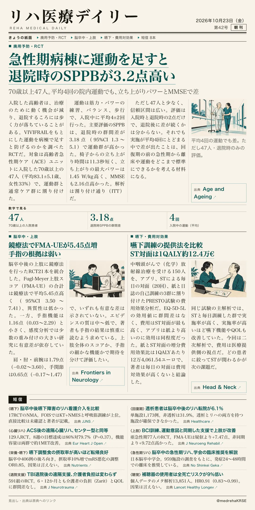
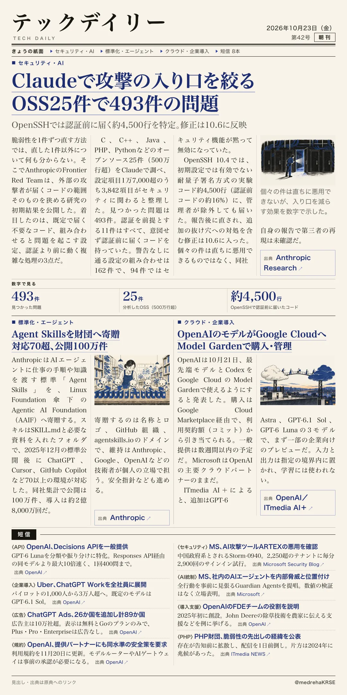

リハ医療デイリー
急性期病棟に運動を足すと退院時のSPPBが3.2点高い
70歳以上47人。平均4回の院内運動でも、立ち上がりパワーとMMSEで差
入院中の高齢者の機能低下は、病棟での運動で食い止められるのか。急性期ケアユニットでのRCT。

テックデイリー
Claudeで攻撃の入り口を絞る OSS25件で493件の問題
OpenSSHでは認証前に届く約4,500行を特定。修正は10.6に反映
脆弱性を1件ずつ直す代わりに、外から届くコードの範囲を狭められるか。Anthropicの初期結果。
